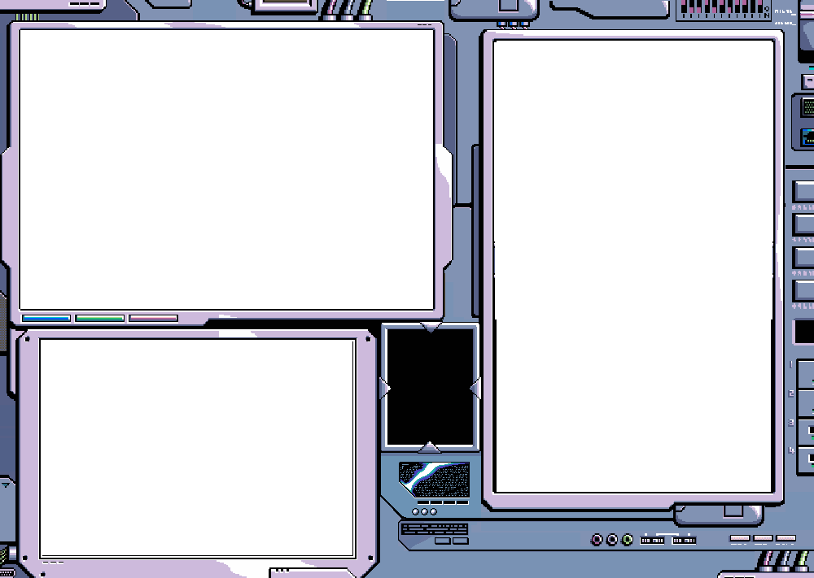

inspired by yuzuki, this is a maid-style dress i made. the ruffle collar and yoke are made from a luxurious 4-ply silk crepe: a fabric i would work with more if it weren't so expensive. the rest of the dress is made from a black silk crepe. the crystal buttons were added several months after i finished the dress.
i love this dress and I can't wait to make more variations in different colors.